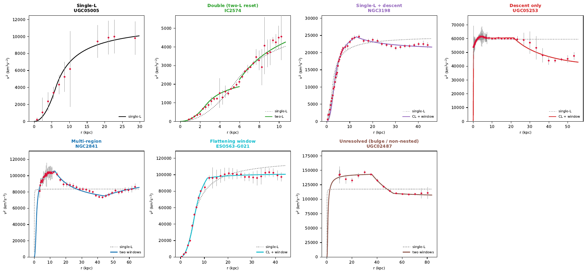
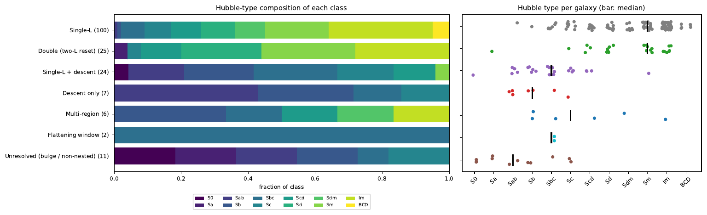

Galaxies and jets as flows of space
E.P.J. de Haas · Kandinsky College, Nijmegen · SPARC fits 2026
All 175 SPARC rotation curves in the constant-Lagrangian model
Every rotation curve of the SPARC database was fitted with the constant-Lagrangian inflow model and, where the data asked for it, with its extensions: a second Lagrangian or a virial window. 100 galaxies need only one Lagrangian. The rest add one or two features, and which feature appears follows the size of the bulge.
The seven classes of the overall report, with the typical shape of v²(r) and the number of galaxies in each. From left to right the share of galaxies with a photometric bulge rises from 2% to 86%.
How the sample was sorted
A single-Lagrangian fit comes first. The pattern of its residuals then decides which extension is tested.
Fit one Lagrangian
Fit (M, R) to v²(r) of every galaxy, with Hz = 2.2×10⁻¹⁸ s⁻¹ fixed.
Read the residuals
A runs test and two sign templates sort the galaxies into categories A to E.
Test the extensions
Two Lagrangians, one or two virial windows, compared with the single fit by BIC.
Accept or keep
An extension is accepted at ΔBIC < −6 and screened for physically sensible parameters.
Flag short curves
Curves with 13 points or fewer are marked tentative.
Pipeline report (PDF)Single-L atlas, 175 galaxiesFirst two-L atlasSummary (CSV)
The five category reports
Each report gives the fits, residual diagnostics, parameter uncertainties (statistical, jackknife, distance and inclination) and an atlas with a residual panel for every galaxy. The coloured bar shows where the galaxies of each category end up in the overall classification.
-
Category A: Single-L adequate 54 galaxies
No residual structure and χ²ν ≤ 1.
All 54 keep one Lagrangian; 17 have both M and R determined to 30% (grade I).
-
Category B: + − + residual wave 45 galaxies
Data first above, then below, then above the single-L curve.
13 clean nested two-L fits, 8 of them the 2018 double-fit galaxies; 5 need more regions; 5 are not nested.
Report (PDF)Atlas, acceptedAtlas, single-L keptResults (CSV)LaTeX
-
Category C: − + − residual wave 41 galaxies
Data above the curve near the peak, below it further out.
26 Keplerian descent windows, always preferred over two-L; floor A and window radius to 6% and 9%.
-
Category D: Other residual structure 18 galaxies
Structured, but matching neither template.
Heterogeneous: 6 within errors, 7 absorbed by windows or resets, 5 bulge-dominated beyond the present model.
-
Category E: Poor fit, no detected structure 17 galaxies
χ²ν > 1 with a runs test too weak for short curves.
Not a physical class: 11 galaxies show B-, C- or D-type features once tested by BIC.
Overall classification
The five reports combined into one classification of all 175 galaxies, without refitting. Each galaxy is given the simplest description its own analysis accepted.

| Class | Galaxies | Median type | With bulge | Median χ²ν, single → final | Median RMSrel | Description |
|---|---|---|---|---|---|---|
| Single Lagrangian | 100 | Sm | 2% | 0.28 → 0.28 | 0.109 | One constant Lagrangian (M, R) fits the whole curve. |
| Two Lagrangians | 25 | Sm | 8% | 3.26 → 0.90 | 0.127 | An inner Lagrangian hands over to an outer one at R₂: a nested spiral. |
| Single + descent | 24 | Sbc | 42% | 4.28 → 0.89 | 0.075 | CL rise and peak, then a Keplerian descent onto a floor. |
| Descent only | 7 | Sb | 86% | 5.54 → 1.06 | 0.053 | Compact central mass with a Keplerian descent from the first points. |
| Multi-region | 6 | Sc | 33% | 4.94 → 1.14 | 0.052 | Two virial windows, or a reset plus a window. |
| Flattening | 2 | Sbc | 50% | 2.34 → 0.76 | 0.070 | Beyond the window radius the curve keeps rising, but more slowly. |
| Unresolved | 11 | Sab | 82% | 3.06 → 0.80 | 0.058 | A sharp inner peak the CL bulge cannot follow. |

Code and data
The Python scripts reproduce every fit, figure and report. Each step stores its results, so a later step can be rerun without repeating the earlier ones.
Put the SPARC files MassModels_Lelli2016c.mrt and Table1wbulge.mrt in SPARC-CL-fit/data/, or point the variable SPARC_DATA to their folder.
cd SPARC-CL-fit/code python pipeline.py && python pipeline_plots.py && python make_report.py python catA.py && python catA_plots.py && python catA_report.py python catB.py && python catB_profile.py && python catB_fix.py python catB.py && python catB_profile.py python catB_plots.py && python catB_report.py python catC.py && python catC_post.py python catC_plots.py && python catC_report.py python catD.py && python catD_post.py && python catD_status.py python catD_plots.py && python catD_report.py python catE.py && python catE_post.py python catE_plots.py && python catE_report.py python overall_build.py && python overall_plots.py python overall_report.py